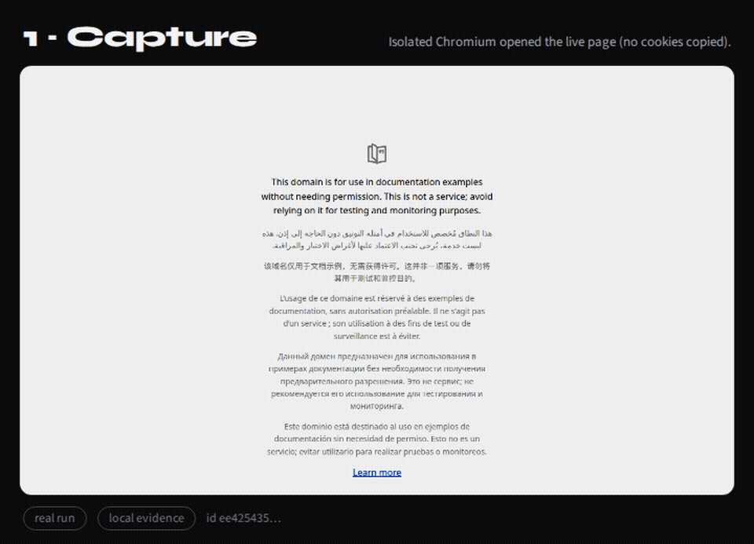

The handoff
Beachhead story in three beats. Not a chatbot. Not a model picker.
Agent A
Coding agent finishes part of the work and leaves a clear handoff.
Verified package
Portable handoff: instruction, context, claims, permissions — open format agents can validate.
Agent B
Next coding agent continues. Verification rejects “continued” without proof.
Illustrated sequence — CLI/MCP prove the loop on your machine. We do not claim a live multi-agent marketplace or Chrome Web Store install.
Ships today
Browser capture into a portable package. Continue with compatible coding agents via CLI or MCP.
- Load the extension (unpacked until the store listing exists).
- Hand off a page — instruction, optional selection, screenshot.
- Save or export the package; validate and continue in the next agent.

Roadmap
Labeled so we don’t burn trust. None of this is claimed as shipped.
- File and desktop capture beyond the browser tab
- Broader “any agent anywhere” past the coding-agent beachhead
- One-click install (Chrome Web Store, signed desktop)
- Managed compatibility, shared history, collaboration, governance, audit
Local-first by default
Packages stay on your machine unless you export them. Cookies and passwords are not copied in by design. Privacy policy